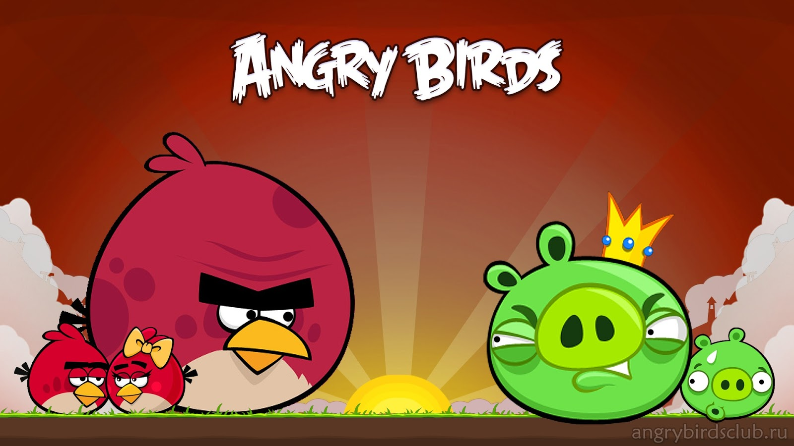

La storia
Angry Birds (letteralmente traducibile in italiano come Uccelli arrabbiati) è una serie di videogiochi rompicapo sviluppati da Rovio Mobile. Lo scopo principale di ogni gioco della serie è di l1anciare dalla fionda alcuni uccelli di vario tipo contro una serie di maialini verdi ("piggie") posizionati all'interno del campo di gioco, costituito da varie strutture, con l'obiettivo di distruggerli. Questa sorta di "guerra" nasce dal fatto che, come viene mostrato nei filmati presenti nel gioco, i maialini hanno rubato le uova agli uccelli per cibarsene, e i volatili li vogliono eliminare per recuperare le uova e per vendicarsi. I diversi scenari di cui è composto il gioco, ognuno dei quali contiene un diverso numero di maiali, uccelli e strutture di varie forme, sono raggruppati in "episodi", ognuno dei quali ha un filmato introduttivo e un titolo.
Ispirato da un semplice schizzo di uccelli stilizzati senza ali, il gioco è stato pubblicato, tramite app dedicata, originariamente per iPhone/iPod Touch. Da quel momento, oltre 12 milioni di copie del gioco sono state acquistate nell’App Store di Apple. L'azienda ha deciso di progettare versioni per altri smartphone touchscreen-based, compresi quelli che utilizzano Android e i sistemi operativi Symbian e Windows Phone.
Torna su
Rovio Mobile ha sostenuto e sta sostenendo Angry Birds con numerosi aggiornamenti gratuiti che aggiungono man mano ulteriori contenuti del gioco. Tutti questi upgrade sono gratuiti e scaricabili direttamente dallo store del sistema operativo usato dal proprio cellulare, anche se alcune nuove funzionalità sono a pagamento (come la Mighty Eagle). La società ha creato altri giochi della serie, ad esempio in Angry Birds Seasons le ambientazioni omaggiano ricorrenze durante l'arco dell'anno (in principio si trattava soltanto di uno speciale dedicato ad Halloween, poi sono state introdotte altre ricorrenze). La versione 2.0 di Seasons ha introdotto la suddivisione in anni: tale versione ha raggruppato i precedenti sette episodi all'interno di una sezione denominata "Seasons 2011", ed ha inserito un nuovo episodio, "Ham'o'ween", all'interno di una sezione denominata "Seasons 2012" (nonostante ciò sia accaduto ad ottobre 2011).
Da fine gennaio 2011, Angry Birds è disponibile in download in versione Minis di Sony PlayStation 3 e PSP riscuotendo un grande successo. A febbraio 2012, Rovio ha pubblicato una versione particolare del gioco sul popolare social network Facebook, dotata di alcune caratteristiche peculiari come l'acquisto di power-up a pagamento, quali i super-semi (che ad esempio aumentano le dimensioni degli angry bird) che sono poi stati inclusi anche nel gioco originale a partire da agosto 2012. Dal 23 maggio 2012 Angry Birds Facebook è stato aggiornato aggiungendo il Weekly Tournaments un torneo che ospita nuovi livelli in cui gli amici possono sfidarsi vincendo nuovi power-up ed ha cambiato il nome in Angry Birds Friends. Il 15 luglio 2012 è stato inoltre aggiunto un livello inedito chiamato Pigini Beach. Il 2 maggio 2013 la Rovio rilascia sull'App Store e sul Google Play Store le rispettive versioni per iOS e Android di Angry Birds Friends. Le Versioni: Angry Birds - 10 Dicembre 2009: Angry Birds è un videogioco rompicapo sviluppato e pubblicato dall'azienda finlandese Rovio Mobile. Si tratta del primo capitolo della nota serie di videogames. La trama del gioco è semplice e parla di un gruppo di uccelli arrabbiati (appunto gli "Angry Birds") che vogliono vendicarsi con dei maialini verdi (i "Piggies") colpevoli di aver rubato loro le uova per cibarsene. Si armano così di fionda e si lanciano contro i loro nemici per eliminarli. Diversi tra di essi sono dotati di un potere. Angry Birds Season - 21 Ottobre 2010: Angry Birds Seasons è un videogioco rompicapo sviluppato dalla Rovio Mobile, primo spin-off del gioco principale Angry Birds nonché secondo capitolo della serie. Si distingue dal gioco principale perché ogni episodio ha una correlazione con una stagione dell'anno. Inizialmente il gioco era stato rilasciato con il nome Angry Birds Halloween e si trattava di uno spin-off del gioco originale incentrato appunto su tale festività. Tuttavia la Rovio nel dicembre 2010, dopo poco più di un mese dal suo lancio, ha rilasciato un nuovo aggiornamento che ha aggiunto al titolo nuovi livelli a sfondo natalizio e ne ha cambiato la denominazione in quella attuale. Angry Birds Rio - 22 Marzo 2011: Angry Birds Rio è un videogioco rompicapo sviluppato e pubblicato dall'azienda finlandese Rovio Mobile. Si tratta del secondo spin-off del noto puzzle game Angry Birds nonché terzo capitolo della serie rilasciato a marzo 2011. Questo titolo è ambientato nell'universo dell'omonimo film ed è stato pubblicato proprio lo stesso giorno della première di quest'ultimo. In questo nuovo capitolo gli Angry Birds vengono catturati da dei contrabbandieri e portati sull'isola di Rio dove incontrano i protagonisti del film e si alleano con loro per liberare tutti gli uccelli ed eliminare i malvagi uistitì. Angry Birds Space - 22 Marzo 2012: Angry Birds Space è un videogioco rompicapo sviluppato e pubblicato dall'azienda finlandese Rovio Mobile. Si tratta del terzo spin-off del noto puzzle game Angry Birds nonché quarto capitolo della serie. La trama del gioco è simile a quella dei capitoli precedenti e vede gli "uccelli arrabbiati" impegnati a vendicarsi dei maialini verdi rei di aver rubato loro le uova. All'inizio del gioco però ci viene mostrato che gli Angry Birds inseguendo i Piggies vanno a finire in un buco nero che li catapulta, assieme ai loro acerrimi nemici, nello spazio mutando tra l'altro i loro poteri. Angry Birds Star Wars - 8 Novembre 2012: Angry Birds Star Wars è un videogioco multipiattaforma della Rovio Mobile, pubblicato l'8 novembre 2012. È basato sull'impostazione del celeberrimo Angry Birds ed ambientato nell'universo di Star Wars. I personaggi, di conseguenza, assumono l'aspetto dei personaggi più famosi di Guerre stellari: gli Angry Rebels dovranno sconfiggere gli Imperial Pigs, rispettivamente parodie dell'Alleanza Ribelle e dell'Impero Galattico. Angry Birds Star Wars II - 18 Settembre 2013: Angry Birds Star Wars II è un videogioco multipiattaforma della Rovio Mobile, pubblicato il 18 settembre 2013 (nonostante l'uscita fosse prevista per il giorno dopo). Il gioco, annunciato il 15 luglio dello stesso anno, è il sequel di Angry Birds Star Wars ed è basato sulla nuova trilogia. Tra le novità vi sono alcuni personaggi inediti (come Yoda o Darth Maul) o la possibilità di "teletrasportare" il pupazzo di uno dei personaggi all'interno della console.

Torna su